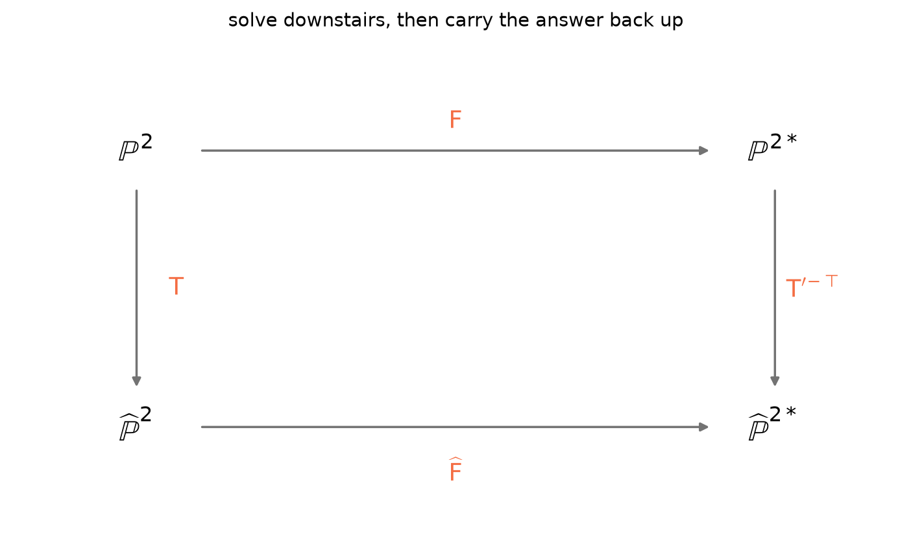
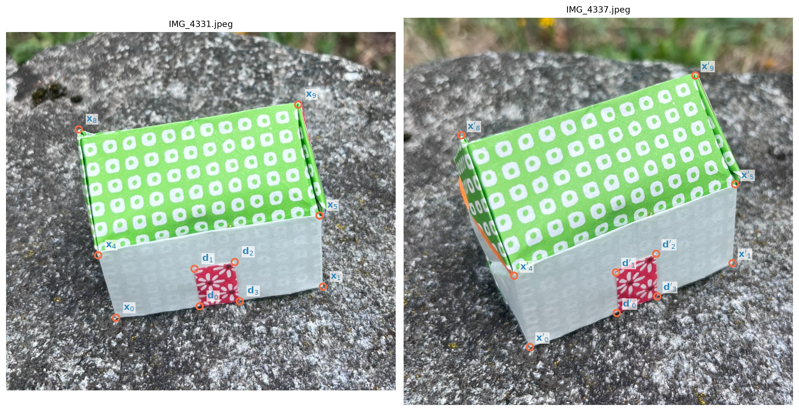
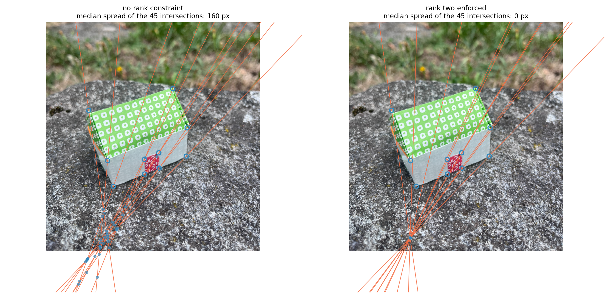

The previous notebook built the fundamental matrix out of two known cameras. Here we do without them: only pairs of image points, and the constraint \(\mathbf{x}'^\top \mathsf{F}\mathbf{x} = 0\) that every correspondence must satisfy.
That constraint is linear in the nine entries of \(\mathsf{F}\), which is the whole reason the problem is tractable at all — and, as we shall see, also the reason the answer needs fixing afterwards.
Computing \(\mathsf{F}\) from correspondences
Everything so far assumed we knew the cameras. In practice we usually do not: we have two photographs and a set of matched points. Even so, the epipolar geometry can be estimated from the correspondences alone.
The whole algorithm, known as the eight-point algorithm, can be summarised as follows.
Each correspondence gives one linear equation in the nine entries of \(\mathsf{F}\).
Stack eight or more of them and take the null vector of the resulting matrix.
Do all of this in normalized coordinates, or the answer will be numerical noise.
Force the result to have rank two.
Step one first. Expanding \(\mathbf{x}'^\top \mathsf{F} \mathbf{x} = 0\) with \(\mathbf{x} = (u, v, 1)\) and \(\mathbf{x}' = (u', v', 1)\) gives
which is the Kronecker product \((\mathbf{x}' \otimes \mathbf{x})^\top
\operatorname{vec}\mathsf{F} = 0\): bilinear in the points, linear in the unknowns.
How many do we need? \(\mathsf{F}\) has nine entries, but it is defined only up to scale — multiplying it by any non-zero constant leaves the constraint unchanged — and it must have rank two. That is nine minus one minus one:
\[\text{7 degrees of freedom.}\]
Seven correspondences ought to be enough, and they are, but the rank condition is cubic, so the solution is not unique and the problem stops being linear. At the moment, we prefer dropping the rank condition and treating \(\mathsf{F}\) as an arbitrary matrix defined up to scale costs one more point and buys a linear problem: hence we need eight points.
def design_matrix(x, xp):"""One row per correspondence: the Kronecker product x' (x) x.""" u, v = x[:, 0], x[:, 1] up, vp = xp[:, 0], xp[:, 1]return np.column_stack([up*u, up*v, up, vp*u, vp*v, vp, u, v, np.ones(len(x))])A = design_matrix(X_h, Xp_h)print("design matrix:", A.shape)print("column magnitudes:", np.round(np.abs(A).max(axis=0), 1))
The entries of \(\mathsf{A}\) span six orders of magnitude: the \(u'u\) column is of order \(10^6\), the \(u\) column of order \(10^3\), the last column is exactly \(1\). We are about to ask for the smallest singular vector of this matrix, and a matrix whose columns live on wildly different scales has a condition number to match. The answer will be dominated by rounding.
Hartley’s fix is to change coordinates before solving: translate each set of points so its centroid is at the origin, then scale so the average distance from the origin is \(\sqrt2\). Both are similarities, and a similarity of the image is just a different choice of pixel units — the geometry does not care.

Figure 1: Hartley normalisation as a change of coordinates: precondition the points, solve the linear system where it is well conditioned, then carry the answer back to pixels.
The diagram is the whole idea: we cannot solve well upstairs, so we push the points down with \(\mathsf{T}\) and \(\mathsf{T}'\), solve there for \(\widehat{\mathsf{F}}\), and carry the result back with
The transpose on \(\mathsf{T}'\) is not a typo: lines transform contravariantly to points, which is exactly what the right-hand arrow of the diagram says.
def normalize_points(x):"""Centroid to the origin, mean distance to the origin equal to sqrt(2).""" c = x[:, :2].mean(axis=0) d = np.linalg.norm(x[:, :2] - c, axis=1).mean() s = np.sqrt(2.0) / d T = np.array([[s, 0, -s*c[0]], [0, s, -s*c[1]], [0, 0, 1.0]])return (T @ x.T).T, Txn, T = normalize_points(X_h)print("before: mean distance from the centroid =",f"{np.linalg.norm(X_h[:, :2] - X_h[:, :2].mean(0), axis=1).mean():8.1f} px")print("after : mean distance from the centroid =",f"{np.linalg.norm(xn[:, :2] - xn[:, :2].mean(0), axis=1).mean():8.4f}"," (= sqrt(2))")# the ninth singular value is the solution direction, so compare the eight# that carry information: s1 / s8 is the conditioning that actually bitess_raw = np.linalg.svd(design_matrix(X_h, Xp_h))[1]s_nrm = np.linalg.svd(design_matrix(xn, normalize_points(Xp_h)[0]))[1]print(f"spread of the informative singular values, s1/s8:")print(f" in pixels {s_raw[0]/s_raw[7]:.1e}")print(f" normalized {s_nrm[0]/s_nrm[7]:.1e}")
before: mean distance from the centroid = 251.3 px
after : mean distance from the centroid = 1.4142 (= sqrt(2))
spread of the informative singular values, s1/s8:
in pixels 1.1e+06
normalized 4.0e+01
Six orders of magnitude of conditioning, recovered by a change of units.
One step remains. The null vector of \(\mathsf{A}\) is some \(3 \times 3\) matrix, and on noisy data it will have full rank. Using the Eckart–Young–Mirsky theorem, we simply replace it by the closest rank-two matrix in the Frobenius norm, which the singular value decomposition hands us: compute \(\widehat{\mathsf{F}} = \mathsf{U}\operatorname{diag}(\sigma_1, \sigma_2,
\sigma_3)\mathsf{V}^\top\) and set \(\sigma_3\) to zero.
We also need a way to say how well an estimate fits the data. Above we measured the distance of \(\mathbf{x}'\) from the line \(\mathsf{F}\mathbf{x}\); from here on we average it with the distance of \(\mathbf{x}\) from \(\mathsf{F}^\top\mathbf{x}'\), because \(\mathsf{F}\) defines epipolar lines in both directions and on noisy data there is no reason to measure the error in one image and not the other.
This is a choice, not a definition handed down. The algebraic residual \(\mathbf{x}'^\top\mathsf{F}\mathbf{x}\) is easier to compute but has no units and no geometric meaning; the symmetric distance is in pixels, which is what we can judge; and there is a third quantity, the Sampson distance, that approximates the reprojection error better than either.
All in all the eight-point algorithm can be implemented as follows:
def eight_point(x, xp, enforce_rank2=True):"""Estimate F from n >= 8 correspondences, in homogeneous pixel coordinates."""# normalize the correspondences xn, T = normalize_points(x) xpn, Tp = normalize_points(xp)# build the design matrix A = design_matrix(xn, xpn)# solve a linear system to get F Fh = np.linalg.svd(A)[2][-1].reshape(3, 3)if enforce_rank2: U, s, Vt = np.linalg.svd(Fh) s[-1] =0.0 Fh = U @ np.diag(s) @ Vt# denormalize F = Tp.T @ Fh @ Treturn F / np.linalg.norm(F)
Time to try it on data. Since, we know the projections matrices, we can compare the fundamental matrix computed from the cameras, with the one obtained via the eight-point algorithm.
F_est = eight_point(X_h, Xp_h)sgn = np.sign((F_est * F_geo).sum())print("residuals on the synthetic data:",f"{epipolar_distance(F_est, X_h, Xp_h).max():.2e} px")print("largest entrywise difference from the true F:",f"{np.abs(sgn*F_est - F_geo).max():.2e}")
residuals on the synthetic data: 5.69e-13 px
largest entrywise difference from the true F: 1.47e-17
The small residuals show that we were able to recover the fundamental matrix up to machine precision. In practice, however, we have noise, and to improve the statistical efficiency of our estimation, instead of considering just 8 points, we can increase the number of matches. We just used ten correspondences, and the extra two do no harm, the system becomes overdetermined and the null vector becomes a least-squares fit, which is exactly what we want when the data is noisy. More points, better estimate.
And a warning: eight points in a bad configuration are worse than useless. Here is the same estimate run on every subset of eight, sorted by how far it lands from the truth.
import itertoolsscores = []for c in itertools.combinations(range(len(IDS)), 8): c =list(c) Fc = eight_point(X_h[c], Xp_h[c]) err = np.abs(np.sign((Fc*F_geo).sum())*Fc - F_geo).max() scores.append((err, tuple(IDS[i] for i in c)))scores.sort()print("best subset:", scores[0][1], f" error {scores[0][0]:.1e}")print("worst subset:", scores[-1][1], f" error {scores[-1][0]:.1e}")
Figure 2: Different subsets of eight correspondences might give different estimates.
Eight points are enough only when they are in general position. Forty of the forty-five subsets return the true matrix to machine precision — the data is exact, after all — and five fail outright. The five are not unlucky. For them the design matrix has rank seven instead of eight, so the null space is two-dimensional: a whole pencil of matrices satisfies all eight equations exactly, and nothing in the data can choose between them. Adding decimal places would not help, because the answer is not there to be found.
The problem is in the configuration itself. It is a prism, the two gables are congruent, one the translate of the other, and the five failing subsets are exactly those that keep four vertices of one gable together with their four translates. Which configurations fail, and why, will be investigated later…
On images
Let us now use real correspondences clicked by hand on the two photographs, ten of them, the six house corners and the four corners of the door. Their mean distance from the true epipolar lines is about 1.7 pixels, which is what careful annotation looks like.
ann = load_annotation("two_view_matches")xr = h(np.array([m["x"] for m in ann["matches"]]))xpr = h(np.array([m["xp"] for m in ann["matches"]]))rid = [m["id"] for m in ann["matches"]]d_true = epipolar_distance(F_geo, xr, xpr)for name, dd inzip(rid, d_true):print(f" {name:3s}{dd:5.2f} px from the true epipolar line")print(f"\n mean {d_true.mean():.2f} median {np.median(d_true):.2f} max {d_true.max():.2f}")
X0 0.45 px from the true epipolar line
X1 0.07 px from the true epipolar line
X4 0.18 px from the true epipolar line
X5 3.31 px from the true epipolar line
X8 2.44 px from the true epipolar line
X9 1.73 px from the true epipolar line
D0 1.96 px from the true epipolar line
D1 5.44 px from the true epipolar line
D2 1.04 px from the true epipolar line
D3 0.43 px from the true epipolar line
mean 1.70 median 1.38 max 5.44

Now estimate \(\mathsf{F}\) from these, twice: once letting the null vector stand as it comes out of the linear system, once forcing rank two. The difference is barely visible in the numbers and evident in the picture.
F_free = eight_point(xr, xpr, enforce_rank2=False)F_rank2 = eight_point(xr, xpr, enforce_rank2=True)for tag, F in [("no rank constraint", F_free), ("rank two enforced", F_rank2)]:print(f"{tag:20s} numerical rank {np.linalg.matrix_rank(F)} "f"residuals: mean {epipolar_distance(F, xr, xpr).mean():5.2f} px")
no rank constraint numerical rank 3 residuals: mean 0.22 px
rank two enforced numerical rank 2 residuals: mean 9.50 px

On the left the epipolar lines almost meet: the small blue dots are the 45 pairwise intersections, scattered over a couple of hundred pixels. There is no epipole, because a rank-three matrix has no null vector, and a family of lines with no common point is not an epipolar pencil.
On the right they meet exactly, at a single point. Setting one singular value to zero is what turns a matrix that fits the data into a matrix that describes the epipolar geometry.
Note also that the roles of the two images are symmetric. So transposing the constraint gives \(\mathbf{x}^\top \mathsf{F}^\top \mathbf{x}' = 0\): the same matrix, read backwards, maps points of the second image to lines in the first.
Questions to leave open
The constraint is necessary — is it sufficient? If two points correspond then \(\mathbf{x}'^\top\mathsf{F}\mathbf{x} = 0\). But every point of the line \(\mathsf{F}\mathbf{x}\) satisfies the same equation, and there are infinitely many of them. What does the constraint actually rule out, and what is left for a matcher to do?
We force the rank down to two — what stops it from falling to one? Nothing, in the algorithm as written. A rank-one \(\mathsf{F}\) is degenerate in a way that the SVD step will happily produce if the second singular value is also small. When does that happen, and would you notice?
Forcing rank two made the residuals worse. Should it not have made them better? Compare the numbers above: the unconstrained estimate fits the ten points more closely than the rank-two one, and both fit them more closely than the true\(\mathsf{F}\). What is being minimized, and is it what we care about?
The epipoles estimated from the photographs are nowhere near the true ones. Compute them and see. Ten points, annotated to two pixels, and a quantity that moves by hundreds — which part of the geometry is so badly conditioned, and what would you do about it?
What happens when the camera moves straight ahead? The baseline points along the optical axis, so the epipole lands inside the picture and the epipolar lines radiate out from it. Where exactly, and what does the pencil look like?
Is every rank-two \(3\times3\) matrix a fundamental matrix? For calibrated cameras the analogous object, the essential matrix, needs two equal singular values and has only five degrees of freedom.
For what motion is \(\mathsf{F}\) skew-symmetric? Then every epipolar line corresponds to itself, and the two pictures are related in a way you can spot by eye.
Does \(\mathsf{F}\) still exist if the two photographs were taken at different zoom? The answer is the reason one works with \(\mathsf{F}\) at all.
Further reading
Longuet-Higgins, H. C. “A computer algorithm for reconstructing a scene from two projections”, Nature 293, 1981. The original eight-point algorithm.
Hartley, R. “In defense of the eight-point algorithm”, IEEE TPAMI 19(6), 1997. Why normalizing the coordinates matters as much as it does.
Hartley, R. and Zisserman, A. Multiple View Geometry in Computer Vision, 2nd ed., Cambridge University Press, 2004. Chapter 9 for the epipolar geometry, Chapter 11 for the computation of \(\mathsf{F}\), and Result 17.1 for the minors.
Fusiello, A. Visione Computazionale: tecniche di ricostruzione tridimensionale, Franco Angeli, 2018. Chapter 5.